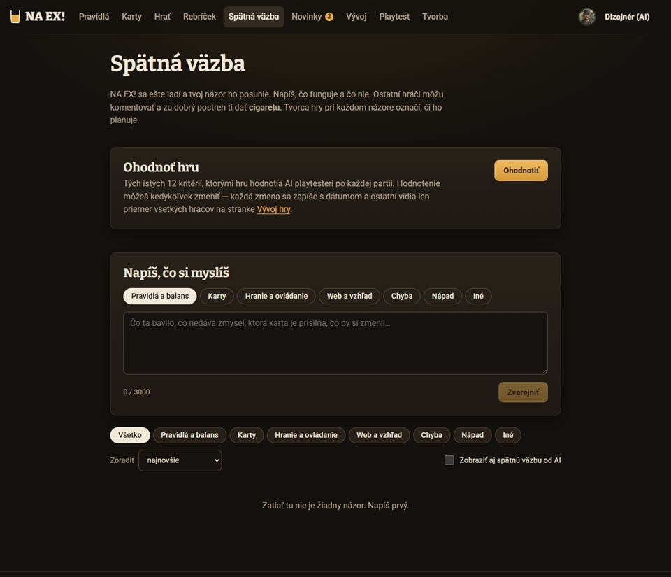
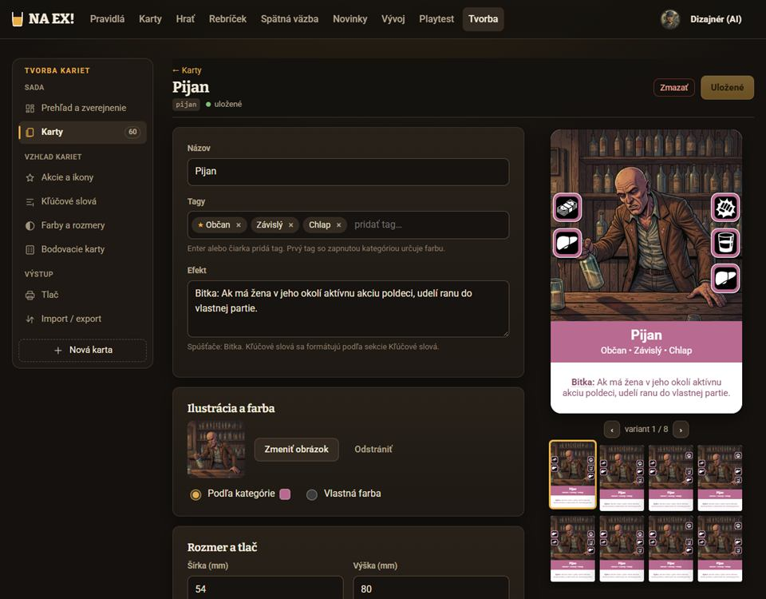
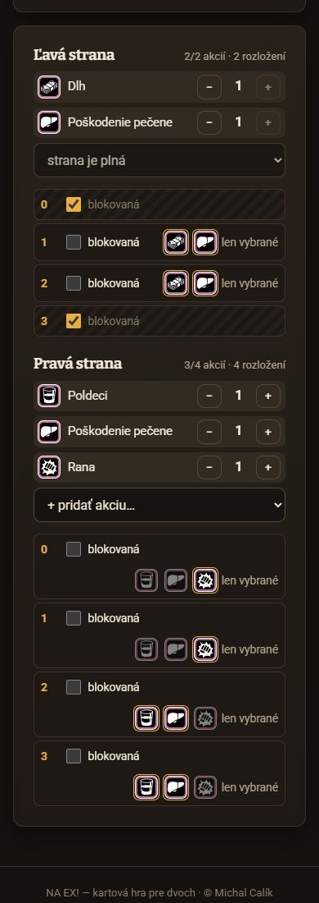
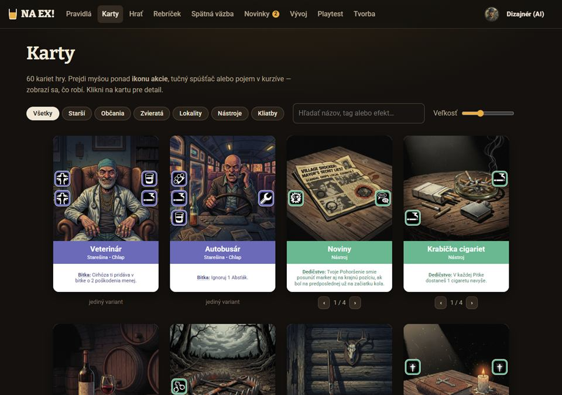
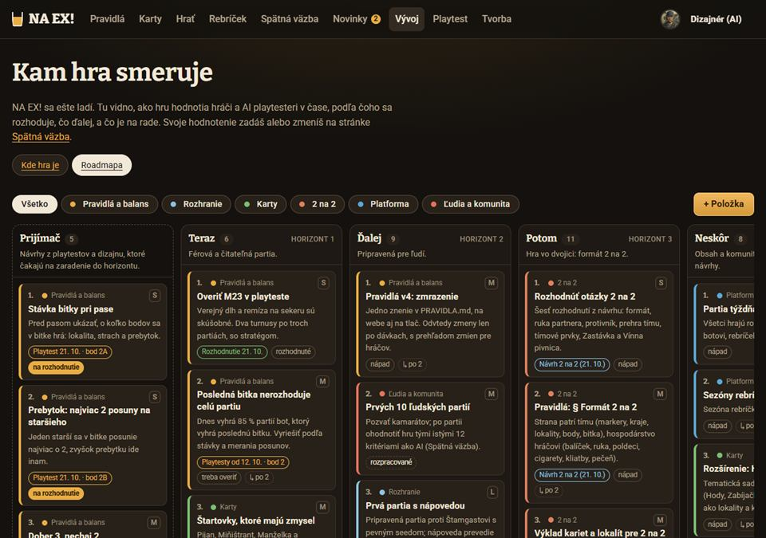
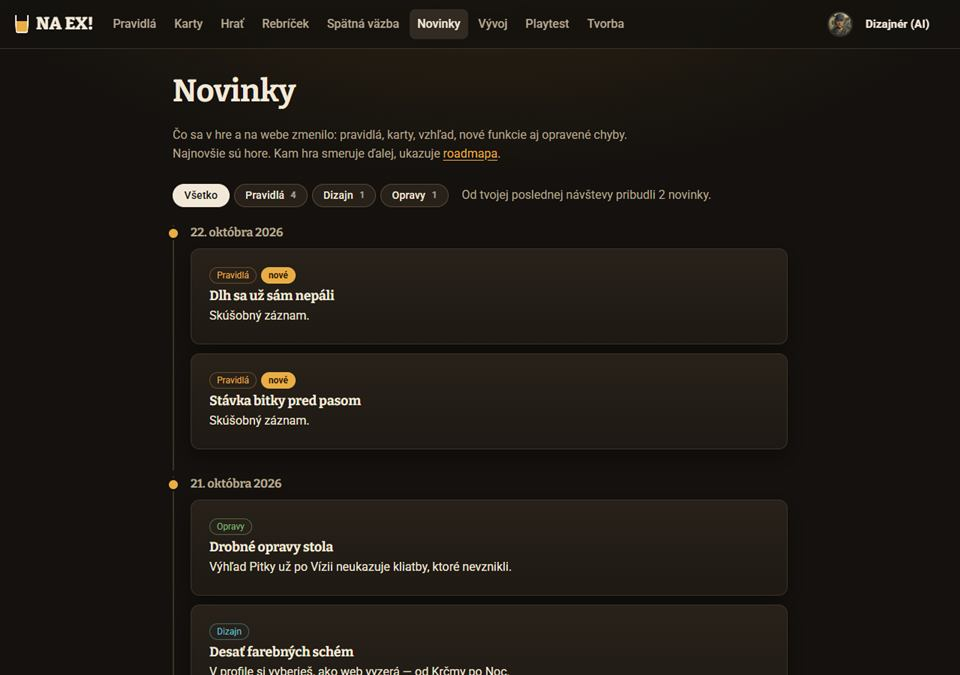
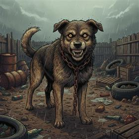
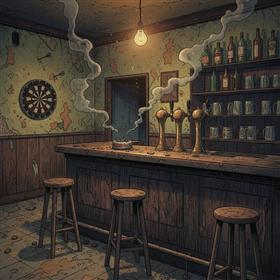
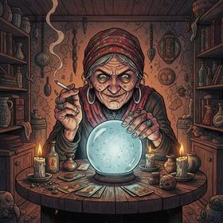
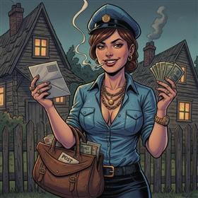

Verdikt: Dielňa má byť stôl, na ktorom ležia rozrobené karty — návrh je vždy vidieť ako skutočnú kartu (rovnaké líce ako v glosári), vedľa nej čitateľný text, stav a cigarety. Editor je tvorca kariet bez technických vecí: 4 pozície na stranu, akcia sa klikne priamo na kartu, efekt so spúšťačom a meračom dĺžky. Všetko z existujúcich tokenov a komponentov (panel, čip, cigareta, pečiatka z herného stola); nové sú len 4 sémantické stavy a odvodený okraj polí.
Odporúčam A1 Stôl návrhov + B1 Tvorca s kartou + C1 Detail + D1 Posudok v detaile. Pečiatky „Schválené / Zamietnuté“ a čiarky z krčmového účtu nesú identitu hry.
Z čoho vychádzam (snímky súčasného webu)
Dielňa ešte neexistuje, preto sú tu časti, s ktorými má ladiť. Snímky z lokálneho servera, 1280 px, Krčma, účet Dizajnér (AI). Ilustrácie v mockoch sú zmenšené obrázky kariet zo sady v15; ikony akcií sú skutočné piktogramy z karta/ikony.ts.

01 Spätná väzba — cigareta = „páči sa mi“, kategórie ako čipy, triedenie. Odtiaľ berieme hlasovanie a komentáre. Dve rady rovnakých čipov súperia o pozornosť.

02 Tvorca kariet — rozloženie „formulár vľavo, živá karta vpravo“ preberá B1. Rozmery, mierky a varianty hráč nepotrebuje.

05 Strany v tvorcovi (mobil) — počty, „blokovaná“, „len vybrané“, rozloženia. Pre hráča nepriechodné → Dielňa kladie akcie priamo na pozície.

03 Glosár /karty — líce karty, farby kategórií, čipy a hľadanie. Návrh v Dielni vyzerá rovnako ako karta v glosári.

04 Roadmapa — farebný pásik vľavo podľa kategórie a čip stavu. Dlaždica návrhu má pásik podľa stavu.

06 Novinky — čipy s počtom (Pravidlá 4). Záložky stavov Dielne používajú ten istý vzor.
Audit — čo by Dielňa zdedila
Riziká, ktoré by sa preniesli zo súvisiacich častí, a čo s nimi v Dielni. Kontrast počítaný podľa WCAG z hex hodnôt schémy Krčma (sRGB).
Závažnosť
Oblasť
Problém
Dôkaz
V Dielni
vysoká
Hierarchia / komponenty
Strany v tvorcovi kariet (počty ±, „blokovaná“, „len vybrané“, permutácie) sú nástroj pre tvorcu, nie pre hráča. Prevziať ich do Dielne by hráča zastavilo hneď v kroku 2.
snímka 05; admin/Tvorca.tsx:146–205
Dielňa: 4 pevné pozície na stranu, akcia sa klikne priamo na pozíciu (B1, B2). Do tvorcu sa prevedie bez straty: obsadená pozícia → povolená len táto akcia, prázdna → blokovaná (rovnako ako Autobusár v sade).
vysoká
Navigácia
Hlavná navigácia má už 9 položiek; pri 1101–1400 px sa odkazy zužujú na padding 8 × 10 px a ďalšia položka ju pretlačí.
snímky 01–04; Layout.tsx:10, styles.css:632
Dielňu dať hneď za Karty (súvisí s nimi) a „Novinky“ presunúť do ponuky účtu alebo na stránku Vývoj — rozhodnutie Michala (otázka 9).
stredná
Kontrast
Okraj polí --okraj-svetly má voči poľu 1,99 : 1 (WCAG 1.4.11 žiada 3 : 1). Dielňa je prvý veľký formulár pre hráčov, nie pre admina.
styles.css:156–167
Nový odvodený token --okraj-pola: color-mix(in oklab, var(--okraj-svetly) 65%, var(--tlmeny)) ≈ 3,5 : 1; platí v Dielni, neskôr celý web.
stredná
Kontrast
Pomocné texty polí sú --slaby #8b7d6a: 4,35 : 1 na ploche — tesne pod 4,5 : 1.
styles.css:228 (.pole-pomoc)
V Dielni --slaby-text (5,52 : 1).
stredná
Typografia / karta
Biely názov na pastelovom páse karty má 2,37 : 1 (Nástroj #6ab891) až 4,81 : 1 (Starešina). Na malej karte v zozname (96–150 px) je názov 7–11 px — nečitateľný.
snímka 03; pás karta/karta.css .kl-pas
Karta v zozname je obrázok (alt); názov, typ a úryvok efektu vždy aj ako text vedľa nej (A1).
stredná
Obsah / dĺžka
Efekt, ktorý sa nezmestí, karta potichu zmenší až na 55 % — autor návrhu nevie, že jeho text bude drobný.
karta/KartaLico.tsx:235
Merač dĺžky pod efektom: zmestí sa / zmenší sa / príliš dlhé (B1).
stredná
Hierarchia
Spätná väzba má dve rady rovnakých čipov (kategória vo formulári a filter) rovnako hlasné ako tlačidlá; formulár je pred zoznamom.
snímka 01; SpatnaVazba.tsx:401, 481
Dielňa: tvorba je samostatná stránka, zoznam má len záložky stavov + jedno hlavné tlačidlo „Navrhnúť kartu“.
nízka
Stavy
Stav „nebudeme robiť“ v Spätnej väzbe je sivý prečiarknutý čip bez dôvodu. Pri návrhu karty je dôvod zamietnutia pre autora to najdôležitejšie.
statistiky.css:778
Stav návrhu = ikona + text + farba; zamietnutý má pečiatku a dôvod priamo v dlaždici.
nízka
Dotyk
Tlačidlo cigarety je ≈ 30 px vysoké (padding .3rem) — pod 44 px pre dotyk.
statistiky.css:808
V Dielni malá varianta 36 px v zoznamoch a veľká 52 px na detaile (hlavná akcia stránky).
nízka
Prázdny stav
Prázdna Spätná väzba je len sivá veta uprostred.
snímka 01; statistiky.css:694
Prázdna Dielňa: prázdna karta + výzva + hlavné tlačidlo (sekcia Stavy).
Spoločné prvky Dielne
Jeden súbor stranky/dielna.css. Žiadna nová farba v hex — len sémantické aliasy na existujúce tokeny, takže všetkých 10 schém funguje samo (prepni Krčma / Noc / Lístok pri každej obrazovke).
okraj polí a prázdnych pozícií ≥ 3 : 1 (dnes 1,99)
≈ 3,5 : 1
.stav-navrhu
čip: ikona + text + farba
farba nikdy nie je jediný nosič stavu
text čipu = color-mix(stav 72 %, --text)
.peciatka
z .ucet-peciatka a .tlacidlo-naex
schválené / zamietnuté ako pečiatka na karte — jazyk herného stola
7,9 / 5,8 : 1
.cigareta-velka
varianta TlacidloCigarety, 52 px
hlavná akcia detailu, dotykový cieľ
—
* V svetlej schéme Lístok by čistý --akcent na tónovanom pozadí čipu mal len 3,78 : 1 — preto text čipu mieša stav so --text (72 %), čím je 4,9 : 1 v Lístku a ≥ 6,6 : 1 v Krčme.
Ukážka prvkov
NA EX!JHJano z Hornej
Stav návrhunovýv hlasovaníschválenýzamietnutý
Cigaretaklikni — zapáli sa
Rank (ilustračne)PoldeciDeciSedmičkalen odznak pri mene; nič od neho nezávisí
Pečiatky

Krčmový pes BobíkZviera
Furt: Keď súper dá NA EX, Bobík zaštekne — súper dostane v najbližšej Pitke o 1 cigaretu menej.
Schválené
TPlechová termoska s čajom „s rumom“ na stole vedľa kariet
TermoskaNástroj
Dedičstvo: Raz za Pitku môžeš otočiť vypitý poldeci späť na plný.
Zamietnuté
HDedinský hokejista v drese s rozbitou hokejkou pred zamrznutým rybníkom
HokejistaObčan • Influencer • Chlap
Bitka: Ak má súper v línii Autoritu, udelí 1 ranu navyše.
?
Prvky v kontexte
Karta Hokejista ukazuje nápad na novú akciu: pozícia s otáznikom, šrafovaná a prerušovaná — hneď vidno, že to nie je hotová akcia. Termoska a Kominár nemajú ilustráciu: veľké začiatočné písmeno a popis ilustrácie kurzívou (vzor .kl-bez-obrazka).
Náročnosť: malá (súčasť A–D)
A · Zoznam návrhov
Čo hráč robí: prezerá, čo iní navrhli, dáva cigarety, hľadá svoje. Potrebuje naraz vidieť kartu, stav, podporu a diskusiu a prečítať efekt bez lupy.
A · /dielna
NA EX!JHJano z Hornej
Dielňa
Navrhni kartu do NA EX!. Ostatní ti za dobrý nápad dajú cigaretu a napíšu, čo by zmenili. Najlepšie návrhy si tvorca hry vezme do tvorcu kariet.

Požiarna zbrojnicaLokalita
Zhromaždenie: Každý tvoj Pracujúci v kraji pri bráne má v bitke 1 tuhé poškodenie navyše.
Tvorca hry: Robí to isté ako Krčmárka, len bez podmienky — bola by vždy lepšia. Skús jej dať cenu, napr. Dlh.
FBFerko B.8. 10.94
NA EX!JHJano z Hornej
Dielňa
Navrhni kartu do NA EX!. Ostatní ti za dobrý nápad dajú cigaretu a napíšu, čo by zmenili. Najlepšie návrhy si tvorca hry vezme do tvorcu kariet.
Požiarna zbrojnicaLokalita
Zhromaždenie: Každý tvoj Pracujúci v kraji pri bráne má v bitke 1 tuhé poškodenie navyše.
v hlasovaní229Zuzka Ť. · pred 3 dňami
KKominár s metlou na streche krčmy, za ním mesiac a dym z komína
KominárObčan • Pracujúci • Chlap
Nástup: Pozri si vrchnú kartu súperovho doberacieho balíčka. Ak je to Kliatba, daj ju naspodok.
v hlasovaní146Jano z Hornej · pred 2 dňami
HDedinský hokejista v drese s rozbitou hokejkou pred zamrznutým rybníkom
HokejistaObčan • Influencer • Chlap
Bitka: Ak má súper v línii Autoritu, udelí 1 ranu navyše.
?
v hlasovaní73Ferko B. · včera
Teta z výdajneObčan • Pracujúci • Žena
Pitka: Za 1 cigaretu si vezmi do ruky kartu zo šenku.
nový00Palo Štamgast · pred 2 h
Krčmový pes BobíkZviera
Furt: Keď súper dá NA EX, Bobík zaštekne — súper dostane v najbližšej Pitke o 1 cigaretu menej.
Schválené
schválený3112Marienka · 12. 10.
TPlechová termoska s čajom „s rumom“ na stole vedľa kariet
TermoskaNástroj
Dedičstvo: Raz za Pitku môžeš otočiť vypitý poldeci späť na plný.
Zamietnuté
zamietnutý94Ferko B. · 8. 10.
NA EX!JHJano z Hornej
Dielňa
Navrhni kartu do NA EX!. Ostatní ti za dobrý nápad dajú cigaretu a napíšu, čo by zmenili. Najlepšie návrhy si tvorca hry vezme do tvorcu kariet.
Požiarna zbrojnicaLokalita
Zhromaždenie: Každý tvoj Pracujúci v kraji pri bráne má v bitke 1 tuhé poškodenie navyše.
Požiarna zbrojnica
Zuzka Ť. · pred 3 dňami
IIIIIIIIIIIIIIII II
9 komentárov
K
KominárObčan • Pracujúci • Chlap
Nástup: Pozri si vrchnú kartu súperovho doberacieho balíčka. Ak je to Kliatba, daj ju naspodok.
Kominár
Jano z Hornej · pred 2 dňami
IIIIIIII IIII
6 komentárov
H
HokejistaObčan • Influencer • Chlap
Bitka: Ak má súper v línii Autoritu, udelí 1 ranu navyše.
?
Hokejista
Ferko B. · včera
IIII II
3 komentárov
Teta z výdajneObčan • Pracujúci • Žena
Pitka: Za 1 cigaretu si vezmi do ruky kartu zo šenku.
Teta z výdajne
Palo Štamgast · pred 2 h
—
0 komentárov
Krčmový pes BobíkZviera
Furt: Keď súper dá NA EX, Bobík zaštekne — súper dostane v najbližšej Pitke o 1 cigaretu menej.
Krčmový pes Bobík
Marienka · 12. 10.
IIIIIIIIIIIIIIIIIIIIIIII I
12 komentárov
Schválené
T
TermoskaNástroj
Dedičstvo: Raz za Pitku môžeš otočiť vypitý poldeci späť na plný.
Termoska
Ferko B. · 8. 10.
IIII IIII
4 komentárov
Zamietnuté
A1 · Stôl návrhov odporúčaný
Dlaždica = malá karta (132 px, mobil 96 px) + čitateľný text: stav, názov, typ, úryvok efektu na 3 riadky, autor, cigarety a komentáre s tabuľkovými číslicami.
Pásik vľavo vo farbe stavu (vzor roadmapy), schválené a zamietnuté s pečiatkou na karte; zamietnutý ukazuje dôvod namiesto efektu.
Záložky stavov s počtami (vzor Noviniek) + triedenie, typ, hľadanie. Jedno hlavné tlačidlo vpravo hore.
Celá dlaždica je odkaz (rozšírený klik na h3 a), fokus obkreslí dlaždicu.
Súbory: nové stranky/Dielna.tsx, stranky/dielna.css; KartaLico s bezPopisov; TlacidloCigarety z SpatnaVazba.tsx.
Náročnosť: stredná (1–2 dni)
A2 · Galéria ako glosár
Karty 200 px v mriežke ako v glosári, pod kartou stav, cigarety, autor.
Krajšie, ale efekt sa číta len z karty (≈ 9 px písmo) a na mobile sa zmestia 2 karty po 170 px.
Dobré ako druhé zobrazenie („mriežka / zoznam“) pre tých, čo chcú len pozerať.
Náročnosť: malá
A3 · Nástenka v krčme (odvážny smer)
Korková nástenka, návrhy pripnuté ako lístky, cigarety ako čiarky na krčmovom účte (IIII prečiarknuté po piatich), pečiatky.
Najsilnejšia identita, ale horšie sa porovnáva a filtruje; korok je ďalší povrch mimo tokenov (dekor, nie farba s významom).
Odporúčam z nej prevziať len pečiatky a čiarky, napr. na profile autora („Moje návrhy“).
Náročnosť: stredná
B · Editor návrhu
Čo hráč robí: za 5 minút poskladá kartu. Musí stále vidieť výsledok a nesmie stretnúť pojem z tlače (rozloženie, permutácia, mierka). Mock B1 je funkčný: píš názov a efekt, prepínaj typy a spúšťač, klikni na pozíciu (v zozname aj na karte) a vyber akciu, prepni ilustráciu.
KKominár s metlou na streche krčmy, za ním mesiac a dym z komína
KominárObčan • Pracujúci • Chlap
Nástup: Pozri si vrchnú kartu súperovho doberacieho balíčka. Ak je to Kliatba, daj ju naspodok.
Ťukni na pozíciu na karte. Ľavá a pravá strana sa spájajú so susednými kartami.
Pravá strana · pozícia 3
B1 · Tvorca s kartou odporúčaný
Päť očíslovaných panelov (číslo zozelenie, keď je časť hotová) vľavo, živá karta 300 px vpravo — rozloženie tvorcu, ktoré admin pozná.
Akcie: dva stĺpce po 4 pozíciách zrkadlia kartu. Klik na pozíciu (aj priamo na karte) otvorí paletu 15 akcií v 5 skupinách s ikonou, názvom a jednou vetou. Pod tým histogram „koľko akcií majú karty v hre“ — vedie bez zákazu.
Efekt: spúšťač ako čip (s vysvetlením), text za ním, merač dĺžky podľa toho, ako sa text na karte zmenší.
Typy: čipy s farebnou bodkou kategórie; farbu karty určí prvý farebný.
Ilustrácia: segment Z knižnice / Popíšem / Bez. Popis sa ukáže priamo na karte.
Nová akcia: rozbaľovací panel s prerušovaným okrajom; na kartu sa dá ako „?“.
Mobil: karta sa zmení na lepkavú lištu hore (mini karta + názov + „Ukáž kartu“), hlavné tlačidlo v lepkavej lište dole, paleta ako list zdola.
Súbory: nové stranky/DielnaEditor.tsx; z @naex/tvorbaformatujEfekt, spustaceVTexte; KartaLico potrebuje voliteľný onSlot(strana, pozícia) a vykreslenie prázdnej pozície.
Náročnosť: veľká (3–4 dni, z toho paleta akcií 1 deň)
B2 · Krok za krokom (mobil first)
Jeden krok na obrazovku, karta 250 px vždy hore, pozície sa ťukajú priamo na karte, akcie v liste zdola ako mriežka ikon 4 × 4.
Pre telefón najpríjemnejšie a najviac „hra“; na počítači zbytočne pomalé a skrýva súvislosti (efekt vs. akcie).
Odporúčam B1 všade a z B2 prevziať list zdola a ťukanie na kartu (B1 to už má).
Náročnosť: stredná
C · Detail návrhu s hlasovaním a komentármi
Čo hráč robí: posúdi kartu, dá cigaretu, napíše, čo by zmenil. Karta musí byť veľká a každá ikona vysvetlená textom — nový hráč piktogramy nepozná.
KKominár s metlou na streche krčmy, za ním mesiac a dym z komína
KominárObčan • Pracujúci • Chlap
Nástup: Pozri si vrchnú kartu súperovho doberacieho balíčka. Ak je to Kliatba, daj ju naspodok.
Ľavá strana
Robota — Zahodí 1 priznaný Dlh.
Povera — Mäkké poškodenie do výšky súperovho priznaného dlhu.
Pravá strana
Cigareta — V Pitke dostaneš 1 cigaretu.
Vízia — Na konci Pitky pozrieš vrchnú kartu balíčka.
Ilustrácia zatiaľ len popisom: „Kominár s metlou na streche krčmy, za ním mesiac a dym z komína“.
v hlasovaníhlasovanie do 5. 11.
Kominár
Občan · Pracujúci · Chlap
JHJano z HornejDecinavrhol 20. 10.upravené 1×
MZŤPŠFBCigaretu dali Marienka, Zuzka Ť. a 12 ďalších
14 z 20 — pri plnej krabičke ide návrh tvorcovi hry na posúdenie ak bude prah
Prečo Kominár: Na dedine kominár nosí šťastie. Chcel som kartu, ktorá súperovi pokazí plán ešte pred bitkou.
Komentáre 6
FB
Ferko B.Poldeci2k efektupred 2 dňami
Kominár má nosiť šťastie, nie smolu súperovi. Nech radšej zahodí tvoju Kliatbu — to by som hral.
JH
Jano z HornejDeciautor návrhu2k efektuvčera
Dobrý bod, Ferko. Upravil som: Kliatbu súperovi dá naspodok, takže ju v najbližšej Pitke nedostane.
M
MarienkaSedmička3k akciámvčera
Vízia a k tomu nahliadnutie do balíčka je dvakrát to isté. Vpravo by som dal Odpor namiesto Vízie.
MC
Michal Calíktvorca hryk celkupred 5 h
Téma sa mi páči. Pred rozhodnutím pozriem, či nie je silnejší než Hasič — tiež pracuje s Nástupom.
NA EX!JHJano z Hornej
v hlasovaníhlasovanie do 5. 11.
Kominár
Občan · Pracujúci · Chlap
JHJano z HornejDecinavrhol 20. 10.upravené 1×
KKominár s metlou na streche krčmy, za ním mesiac a dym z komína
KominárObčan • Pracujúci • Chlap
Nástup: Pozri si vrchnú kartu súperovho doberacieho balíčka. Ak je to Kliatba, daj ju naspodok.
123
2Efekt 2 komentáre
Ferko B.: Kominár má nosiť šťastie, nie smolu súperovi…
Jano z Hornej (autor): Upravil som: Kliatbu súperovi dá naspodok…
3Pravá strana 1 komentár
Marienka: Vízia a k tomu nahliadnutie do balíčka je dvakrát to isté…
1Ilustrácia 1 komentár
Zuzka Ť.: Nech má kominár v ruke gombík — chytíš sa ho pre šťastie.
Celkovo 2 komentáre
Michal Calík: Téma sa mi páči. Pred rozhodnutím pozriem Hasiča…
Klik na číslo na karte otvorí vlákno; nový komentár sa pripne ťuknutím na časť karty.
C1 · Karta a diskusia odporúčaný
Vľavo karta 320 px (lepkavá) a pod ňou legenda akcií po stranách — ikona + názov + čo robí; nová akcia s otáznikom.
Vpravo: stav a termín, názov, typ, autor s rankom. Hlasovací panel v jantárovom tóne s veľkou cigaretou (52 px), kto ju dal (avatary) a — ak Michal zavedie prah — krabička 20 cigariet, ktorá sa plní.
Poznámka autora, potom komentáre ako v Spätnej väzbe, s čipom „k čomu“ (celku, názvu, akciám, efektu, ilustrácii). Komentár autora má jemne tónované pozadie a odznak.
Mobil: karta 250 px hore, legenda pod ňou, hlasovanie na celú šírku.
Súbory: stranky/DielnaDetail.tsx; komentáre zdieľať so SpatnaVazba.tsx (vytiahnuť KomentarPolozka do komponenty.tsx).
Náročnosť: stredná (1–2 dni)
C2 · Komentáre pripnuté na kartu
Číslované piny priamo na časti karty (ilustrácia, efekt, strana); komentáre zoskupené do vlákien podľa časti.
Pekne ukáže, ktorá časť je sporná, ale piny zakrývajú malú kartu a na mobile sa ťažko trafia.
Z C2 stačí čip „k čomu“ v C1 — rovnaká informácia bez pinov.
Náročnosť: veľká
D · Admin pri schvaľovaní
Čo admin robí: rozhodne, či karta do hry patrí. Potrebuje porovnanie s podobnými kartami, pár čísel a dve jasné, od seba vzdialené tlačidlá. Mock D1 je funkčný: skús Zamietnuť (dôvod je povinný) a Schváliť (pečiatka dopadne na kartu).
vidí tvorca hry a subadminv hlasovaní14 cigariet · 6 komentárov · 2 dni
K
KominárObčan • Pracujúci • Chlap
Nástup: Pozri si vrchnú kartu súperovho doberacieho balíčka. Ak je to Kliatba, daj ju naspodok.
Kominár
návrh
Nástup
4 akcie: Robota, Povera, Cigareta, Vízia
HasičObčan • Autorita • Chlap
Nástup: Zober si pracujúceho občana do ruky z odhadzovacieho balíčka.
Hasič
zhoda 62 %
rovnaký spúšťač Nástup
pracuje s balíčkom
spoločná vlastnosť Chlap

VešticaObčan • Zahraničný • Žena
Prehra: Preskúmaj súperov a svoj doberací balík. Vymeň jednu jeho kartu za tvoju a karty vráť.
Veštica
zhoda 48 %
spoločné akcie Vízia, Povera, Cigareta
pozerá do súperovho balíčka

PoštárkaStarešina • Žena
Pitka: Raz smieš dobrať až 2 karty navyše; získaš za to 1 Dlh.
Poštárka
zhoda 35 %
spoločné akcie Vízia, Cigareta, Povera
iný spúšťač (Pitka)
4akcie spolu · v hre najčastejšie 4
1útočná (Povera, mäkké)
+1cigareta v Pitke
4karty v hre so spúšťačom Nástup
Vytvorí sa návrh karty v Tvorbe → Karty (hráči ho uvidia až po zverejnení sady):
id
kominar
Farba
podľa kategórie Pracujúci
Ľavá strana
Robota (poz. 1), Povera (poz. 2); pozície 0 a 3 blokované — 1 rozloženie
Pravá strana
Cigareta (poz. 1), Vízia (poz. 2); pozície 0 a 3 blokované
Ilustrácia
chýba — popis sa prenesie do poznámky karty
Autor
Jano z Hornej — dostane upozornenie
Zamietnuť s odôvodnenímOdôvodnenie uvidí autor aj ostatní pri návrhu. Aspoň 20 znakov.
Schválené. Návrh Kominár je v tvorcovi kariet ako kominar — otvoriť v tvorcovi. Jano dostal upozornenie.
Pod posudkom pokračuje obyčajný detail návrhu (obrazovka C) — admin vidí aj komentáre a hlasy.
NA EX!JHJano z Hornej
Návrhy z Dielne
Návrhy hráčov, ktoré čakajú na rozhodnutie — najstaršie a najpodporovanejšie hore. Podobnosť ukazuje najbližšiu kartu v sade.
Návrh
Autor
Cig.
Kom.
Čaká
Najbližšia karta
Požiarna zbrojnicaLokalita
Zhromaždenie: Každý tvoj Pracujúci v kraji pri bráne má v bitke 1 tuhé poškodenie navyše.
Požiarna zbrojnica
Zuzka Ť.
22
9
3 dni
Zastávka 41 %
K
KominárObčan • Pracujúci • Chlap
Nástup: Pozri si vrchnú kartu súperovho doberacieho balíčka. Ak je to Kliatba, daj ju naspodok.
Kominár
Jano z Hornej
14
6
2 dni
Hasič 62 %
H
HokejistaObčan • Influencer • Chlap
Bitka: Ak má súper v línii Autoritu, udelí 1 ranu navyše.
?
Hokejista ?
Ferko B.
7
3
1 deň
Pijan 30 %
Teta z výdajneObčan • Pracujúci • Žena
Pitka: Za 1 cigaretu si vezmi do ruky kartu zo šenku.
Teta z výdajne
Palo Štamgast
0
0
2 h
Starosta 81 %
D1 · Posudok v detaile návrhu odporúčaný
Panel nad detailom, viditeľný len správcom (jantárový okraj, odznak). Návrh vedľa 3 najpodobnejších kariet sady so zhodou v % a dôvodom (spúšťač, spoločné akcie, typ).
Štyri čísla na prvý pohľad: počet akcií vs. bežný, útok, ekonomika, koľko kariet má rovnaký spúšťač.
Schváliť (hlavné, vľavo) a Zamietnuť (nebezpečné, úplne vpravo) — ďaleko od seba. Schválenie najprv ukáže, čo vznikne v tvorcovi (id, strany, ilustrácia); zamietnutie chce dôvod s rýchlymi čipmi.
Po schválení pečiatka „Schválené“ dopadne na kartu (220 ms, bez pohybu pri prefers-reduced-motion).
Súbory: DielnaDetail.tsx (panel podľa jeSpravca), podobnosť ako čistá funkcia v packages/tvorba (spúšťače, akcie, tagy — bez I/O), API na prevod do KartaNavrh.
Náročnosť: stredná (2 dni vrátane výpočtu podobnosti)
D2 · Front „Z Dielne“ v Tvorbe
Nová položka v bočnom menu Tvorby pod Sadou s počtom čakajúcich, tabuľka s mini kartou, podporou, vekom a najbližšou kartou (vysoká zhoda červeno).
„Posúdiť“ otvorí D1. Nie je to náhrada D1, ale vstupný bod pre admina, ktorý žije v Tvorbe.
Odporúčam ako druhý krok po D1.
Súbory: admin/Admin.tsx (menu), nové admin/ZDielne.tsx.
Náročnosť: malá (nad D1)
Stavy a pohyb
Prázdny stav, načítavanie, chyba, návštevník
NA EX!JHJano z Hornej
Prázdna Dielňa
T
Tvoja karta
Furt: Tu bude tvoj nápad.
Zatiaľ tu nie je žiadny návrh.Máš nápad na postavičku z dediny? Navrhni prvú kartu — ostatní ti za ňu dajú cigaretu.
Načítava sa (kostra)
Chyba a návštevník
Návrhy sa nenačítali — server neodpovedá.
Ako návštevník Dielňu zatiaľ len čítaš. Navrhovať karty a dávať cigarety môžeš po prvej dohratej partii — stačí aj proti botovi.
Návrh Kominár je zverejnený. Pošli ho kamarátom z krčmy, nech pridajú cigaretu.
Stavy
Prázdny stav s prázdnou kartou a výzvou namiesto sivej vety.
Kostra v tvare dlaždice (karta 54 : 80 + riadky) namiesto spinnera.
Návštevník číta, nehlasuje — rovnaká veta ako v Spätnej väzbe.
Náročnosť: malá (súčasť A)
Pohyb (150–250 ms): akcia vložená na pozíciu „dopadne“ (zväčšenie 1,35 → 1, 250 ms); paleta sa vysunie 150 ms; dlaždica sa pri hoveri zdvihne o 2 px; cigareta sa zapáli s dymom (existujúca animácia); pečiatka schválenia dopadne 220 ms.
prefers-reduced-motion: všetko bez pohybu, stav sa zmení okamžite; dym cigarety stojí.
Fokus: globálny :focus-visible (jantár 2 px); dlaždica obkreslená celá; pozície na karte majú vlastný fokus a aria-label „Pravá strana, pozícia 2: Vízia — zmeniť“.
Responzivita: všetky obrazovky cez container queries (@container) — editor aj detail žijú aj v užšom stĺpci; dotykové ciele ≥ 44 px (pozície v zozname 48 px, cigareta 52 px); žiadny vodorovný posun okrem tabuľky v D2.
Odporúčané poradie
#
Čo
Rieši
Náročnosť
1
Spoločné prvky (dielna.css: stavy, pečiatka, --okraj-pola, veľká cigareta) — rýchla výhra, hodina práce
B1 Tvorca s kartou (s listom zdola z B2 na mobile)
nepriechodné strany tvorcu, dĺžka efektu
veľká
4
D1 Posudok, potom D2 Front v Tvorbe
rozhodnutie s porovnaním, prevod do tvorcu
stredná + malá
5
Identita navyše: čiarky a pečiatky z A3 na profile autora, krabička v C1 (ak bude prah)
krčmový charakter
malá
Otázky pre Michala
Hlas cigaretou: je zadarmo ako v Spätnej väzbe (1 hráč = 1 cigareta na návrh, dá sa vziať späť), alebo sa cigarety míňajú z prídelu (napr. krabička 20 na týždeň)? Mock počíta so zadarmo.
Prah: posunie návrh k tebe určitý počet cigariet (krabička 20 v C1), alebo rozhoduješ kedykoľvek a cigarety len radia poradie? A má hlasovanie termín (napr. 14 dní)?
Čo je stav „nový“: zverejnený návrh, ktorý ešte nikto neohodnotil (mock), alebo koncept viditeľný len autorovi?
Odmena autorovi pri schválení: meno v glosári („navrhol Jano z Hornej“), odznak v profile, cigarety, alebo meno aj na tlačenej karte?
Limit: koľko otvorených návrhov smie mať hráč naraz (napr. 3) a smie ich upravovať počas hlasovania? Ak áno, ostanú cigarety (mock: „upravené 1ד, cigarety ostávajú)?
Zamietnuté: vidia ich všetci aj s dôvodom (učí to ostatných — mock), alebo len autor a správcovia?
Tretie rozhodnutie „Vrátiť na úpravu“ popri Schváliť / Zamietnuť — chceš ho?
Váha hlasu podľa ranku (Poldeci / Deci / Sedmička): odporúčam nie — rank len ako odznak pri mene. Súhlasíš?
Navigácia: „Dielňa“ ako samostatná položka hneď za Kartami (lišta má už 9 položiek), alebo záložka na stránke Karty („Karty v hre | Dielňa“)?
Rozsah editora: smie hráč navrhnúť Lokalitu (s krajmi) a Starešinu, alebo len bežné karty? A len existujúce typy (tagy), alebo aj nový typ ako nápad?
Ilustrácia schváleného návrhu s popisom: dokreslíš ju cez Leonardo pri schválení automaticky? A hlasujú v Dielni aj AI playtesteri (v Spätnej väzbe sú predvolene skrytí)?